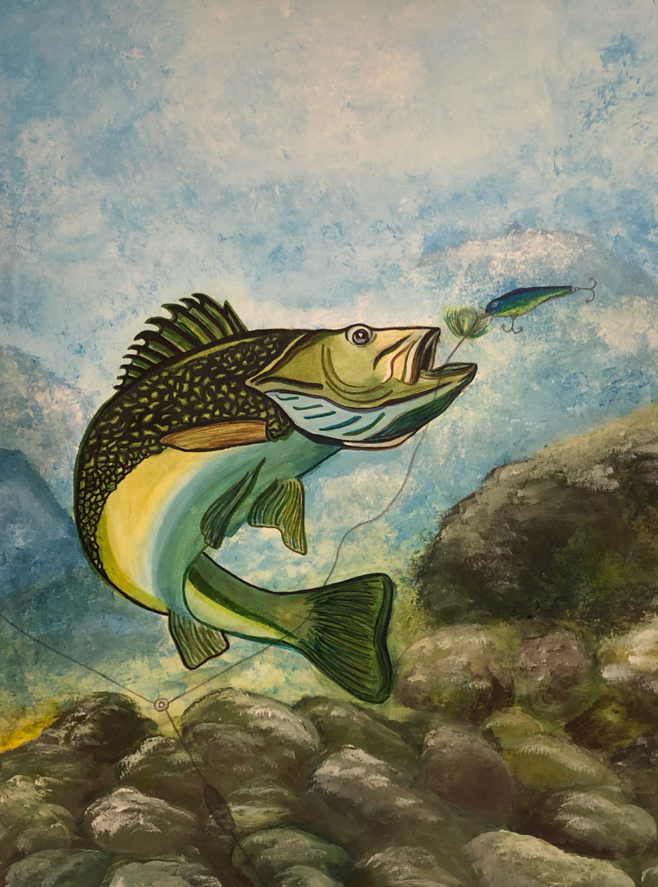

We created HTML pages this week and created a home page with a list of our favorite hobbies. We created a list of our favorite restaurants with links.
Then we learned how to create an ordered list of your favorite websites.
On the second page we created, we wrote a short story and included some of our very own artwork too.
During week 7 we added on to Week 6's website. We "styled" the website and added inline styles, an external style sheet, and used a CDN reference to Bootstrap.
During week 8, we incorporated JavaScript into our HTML pages. We added basic form validation on the Contact Us page. Then, we added a fourth page, which was a simple math game.
Week 9 consisted of learning about p5.js. We were told to create a self-portrait with simple shapes and then title and sign our portrait.
Week 10 we then learned how to animate the previous self-portrait we created in week 9. We chose a few simple shapes to go back and forth along the x-axis. We also selected a couple shapes to move along the y-axis, and at least one simple shape to move using both the x and y-axis.
We were to create a spore-like game. It was made up of a bunch of simple shapes.
Week 12 consisted of focusing primarily on functions. We were told to alter our spore-like game by defining functions and calling them in your draw method or within other functions.
Week 13 was our final regular homework! We used our project from last time to implement and use arrays.